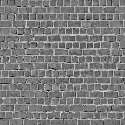
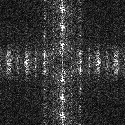
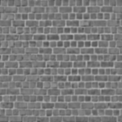
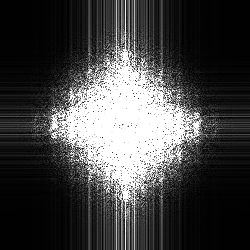
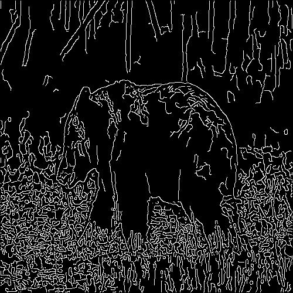

Name: Ritchie Kumar
Student No: 301389811
Date: February. 2, 2022
I have not cheated in any way when doing this assignment, I did it on my own. I may have asked questions about the assignment on Piazza, I know that’s totally fine and even encouraged. I also already know that this class is graded on a curve. I realize that if I cheat and by some miracle not get caught, any increase in my grade will in turn shift the curve and result in lower grades for my classmates. Any undeserved extra grade would come at the cost of all others. That’s horrible! I would never do it.
We can see that the aliasing happens at the top and bottom portions of the image, where the bricks get slightly flattened towards the center of the image. For the frequency domain of the same image, we see the white scattered throughout the image, indicating the aliasing. For the bear, we can see that the edges of the fur are more jagged. The frequency domain has also been scattered throughout.
 The changes are much more visible here. We can see black blotches near the corners of the brick wall. Similarly, the frequency domain has been weakened in both dimensions. The jagged edges on the bear are more prominent. Also the frequency domain has decreased in size at the center.
 We can see that in general, the edges of image have been smoothed out, but are cleaner than the aliased image equivalent. The frequency domain is strong all dimensions, showing retension of the edges.


The optimal parameters provided by the default call of the Matlab edge function show pretty good results in detecting all the brick edges. The function only allows thresholds in the form [low high], where 0 < low < high < 1.



The optimal parameters provided by the edge function for the grizzly bear were not as sharp as the brick wall's. Here we can see that Canny edge detects a lot of false positive edges in the grass of the image, meaning that default optimal threshold values are quite low. Tampering with the paramaters, we find that with the threshold parameters [low high], when low == high or very close, we get a good edge detection for the image.